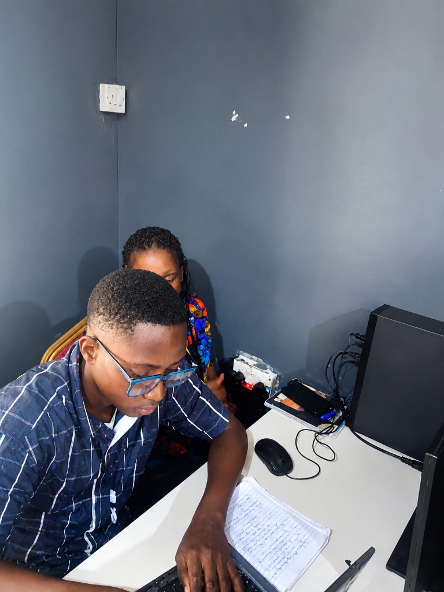

Developers
Build and maintain websites, web applications, APIs and practical automation.
We welcome people who care about learning, quality, collaboration and using technology to make a positive difference.
Opportunities depend on active projects and programme needs. Introduce yourself and tell us what you can bring.
Build and maintain websites, web applications, APIs and practical automation.
Create brand assets, graphics, interface layouts and clear visual communication.
Support learners through explanations, reviews, workshops and project guidance.
Help coordinate activities, welcome members and keep communication organised.
Develop educational content, articles, tutorials and media for the community.
Improve documentation, learning resources, project guides and product instructions.
Send a short introduction, the role or area you are interested in, your location and links to relevant work if available. Students and early-career applicants are welcome to explain what they are currently learning.
Introduce yourself
Let's explore how Heartcode can support your idea, learning journey or organisation.